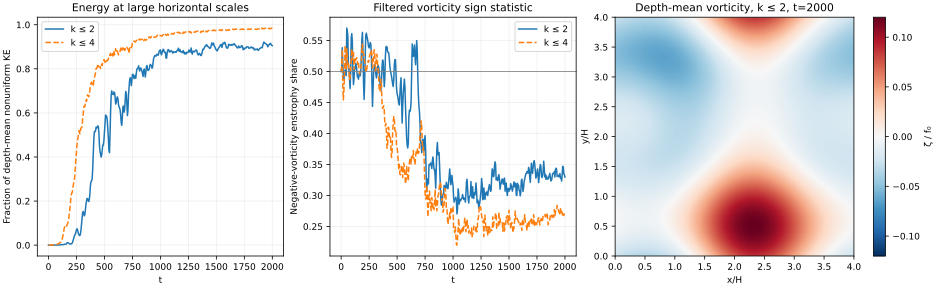

Completed · clean Ω=3 anelastic case · 0–2000 nondimensional time
Large-scale flow with a cyclonic bias
The clean anelastic run reached t=2000. Most of its depth-mean kinetic energy has accumulated in low horizontal modes, and the filtered vorticity has a concentrated positive-sign component. Significant zonal flow is present as well. The original potential-temperature compressible partner has also completed t=2000 and is cyclonically biased. Watch its movies and compare the statistics. Different evolving thermal states and its substantial energy deficit limit causal interpretation.
256² × 80 · 4 × 4 × 1 periodic horizontal box · Ω=3, full rotation vector at 67.5°N · β=0 · no imposed jet · WENO9, no explicit closure. Initial velocity is zero; convection grows from weak thermal noise. Time is nondimensional, not Earth seconds or days.
Vorticity and absolute tracer concentration
Vorticity is on the top row; absolute tracer concentration is below. Columns show z/H=0.19375, 0.49375 and 0.89375. Positive ζ/f₀ is cyclonic. Color scales are fixed throughout; vorticity limits are fixed separately for each depth.
401 saved states at intervals of 5 time units, played at 12 frames/s. Absolute tracer uses a fixed asinh contrast mapping centered at C=0.1; each panel prints its actual mean and RMS variation.
What the completed run shows
| Diagnostic at t=2000 | Result | Meaning |
|---|---|---|
| Depth-mean KE in horizontal modes k≤2 | 90.6% | Strong concentration at large horizontal scales |
| Zonal-u fraction of depth-mean KE | 41.8% | Zonal flow contributes substantially |
| Anticyclonic enstrophy share, k≤2 | 33.0% | 67.0% is in positive-vorticity cells |
| Vorticity skewness, k≤2 | +1.06 | Positive tail is stronger |
| Anticyclonic enstrophy share, k≤4 | 27.1% | The cyclonic bias persists with a wider low-mode filter |

Over t=1500–2000, the corresponding k≤2 averages are 90.1% low-mode kinetic energy and 32.9% anticyclonic enstrophy share. The positive bias is not confined to the final snapshot.
Definitions and limits: k is Fourier radius in cycles per box. The velocity is the reference-density-weighted depth mean, with its spatially uniform component removed. Anticyclonic enstrophy share is the fraction of squared filtered vorticity in negative-vorticity cells; it is not vortex count or net circulation. Periodicity enforces zero net vertical vorticity. These statistics and movies do not measure nonlinear spectral transfer, prove an inverse cascade, or establish a single persistent LSV on their own.
Tracer contrast after homogenization
This supplementary movie shows C minus each plane’s instantaneous horizontal mean, with one fixed amplitude scale across all three depths and all times. It does not divide by the instantaneous variance.
Precision warning for late tracer output: at t=2000, the lower and middle planes have RMS concentration variation of about 4.3×10⁻⁹. The saved planes are Float32, whose spacing near C=0.1 is approximately 7.5×10⁻⁹. Those tiny variations are at the saved-data precision floor and should not be interpreted as resolved physical tracer filaments. The upper-plane RMS variation is about 3.8×10⁻⁶. A nearly blank late panel can therefore reflect actual homogenization, not a failed colormap.
Fidelity and provenance
The run completed in 5h19m of allocated A100 time. The normalized anelastic mass-flux divergence residual remained below 6.2×10⁻¹⁵. The sound-speed-based peak Mach diagnostic reached 0.373 during the run and was 0.305 at the end; the final mass-weighted RMS Mach was 0.062.
The maximum departure of the horizontally averaged temperature profile from its initial value reached 14.9% at the endpoint. The minimum sampled cap-mean N² was still positive, about 4.74, but the cap has weakened. Thermal equilibrium has not been established. The native output includes a legacy compressible-energy proxy; that is not a conserved anelastic invariant and is not used here as an energy-loss estimate.
Analysis summaryStructure time seriesRun configurationMovie scales and hashesFrozen simulation sourceSeparate compressible energy-budget tests